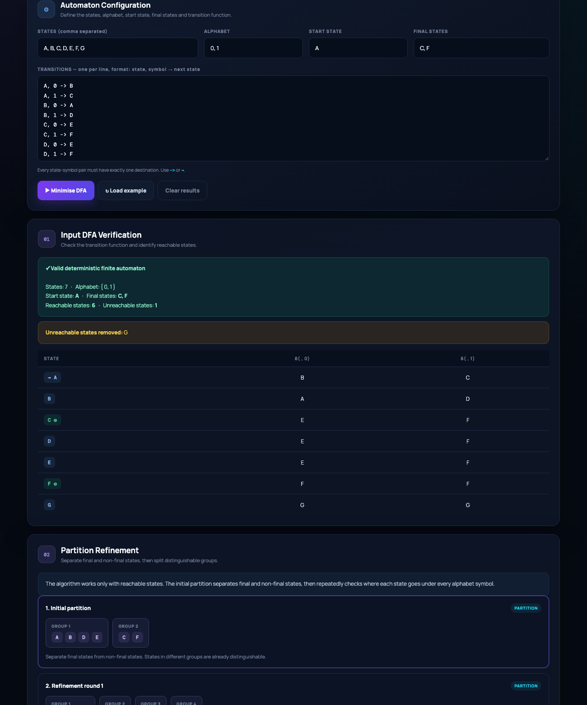

Automata Theory Project Report
Automata Theory and Computability (CSCT 302)
Prepared by
| Name | Enrollment Number |
|---|---|
| Siddhartha Tikaigari | S24CSCU1740 |
| Ayush Bharadwaj | S24CSCU0132 |
Submitted to: Ms. Priti Gupta
Bennett University
A Deterministic Finite Automaton (DFA) is a finite-state machine that accepts or rejects strings over an input alphabet. For every state and every input symbol, a DFA has exactly one next state. Many different DFAs can accept the same language, and some of them contain more states than necessary.
DFA minimisation converts a given DFA into an equivalent DFA with the smallest possible number of states. This project develops an interactive web-based simulator that performs DFA minimisation and shows every step of the process.
Minimising a DFA by hand is error-prone. Students must find unreachable states, identify equivalent states, repeatedly split partitions and then rebuild the transition table. With more states and symbols, it becomes easy to merge two states that are actually distinguishable, or to miss a split.
Our simulator automates this process and displays each partition-refinement step so users can understand how the minimal DFA is formed.
A DFA is represented by the five-tuple:
M = (Q, Σ, δ, q₀, F)
Where:
Two states p and q are equivalent (p ≡ q) if, for every string w ∈ Σ*, δ*(p, w) ∈ F exactly when δ*(q, w) ∈ F. If some string w leads one state to a final state and the other to a non-final state, the states are distinguishable.
The minimal DFA M' = (Q', Σ, δ', q₀', F') has one state for each equivalence class [q] of reachable states, with δ'([q], a) = [δ(q, a)], q₀' = [q₀] and F' = {[q] : q ∈ F}. By the Myhill–Nerode theorem, this DFA is unique up to renaming of states.
| Inputs | Expected Outputs |
|---|---|
| Set of states | Validation result |
| Input alphabet | Original transition table |
| Start state and final states | List of unreachable states removed |
| Transition function (state, symbol → next state) | Step-by-step partitions |
| Minimised DFA transition table and state reduction summary |
The simulator supports complete deterministic finite automata with any number of states and any alphabet. NFAs and partial DFAs are outside the current scope; the simulator reports missing transitions as errors.
The expected outcome is a simple browser-based educational tool that makes DFA minimisation easier to understand and removes errors in manual minimisation.
JFLAP is a widely used desktop tool for automata. It supports DFA minimisation using a tree of state splits. However, it requires Java installation and is a general-purpose tool, so the minimisation steps are mixed with many other features.
These provide graphical editing and string simulation. Some offer minimisation, but most show only the final minimal DFA rather than each refinement round.
| Feature | Existing Tools | Our Simulator |
|---|---|---|
| DFA input and validation | Available | Available, with exact error messages |
| Unreachable state removal | Varies by tool | Included and reported |
| Step-by-step partition refinement | Not a primary feature | Included, with Previous / Next controls |
| Explanation of each split | Rarely | Included |
| Installation required | Java (JFLAP) | None, runs in any browser |
| Technology | Purpose |
|---|---|
| HTML5 | Page structure and input forms |
| CSS3 | Styling, layout and responsive design |
| JavaScript (ES6) | Parsing, validation and minimisation algorithm |
| Node.js | Automated correctness tests |
| GitHub | Version control and team collaboration |
Technical Feasibility: DFA minimisation follows a well-defined algorithm (partition refinement). It runs in polynomial time and is easily implemented in plain JavaScript with no external libraries.
Operational Feasibility: The simulator is a static web page, so users only need a browser. No server, database or installation is needed.
Economic Feasibility: All tools used are free and open source, so the project has no development cost.
Our focus is understanding, not only the answer. Instead of showing just the final DFA, the simulator shows the initial partition, every refinement round with the reason for each split, and a mapping from each minimal state to the original states it replaces.
We developed a web-based simulator in which the user defines a DFA, the system validates it, removes unreachable states, refines partitions until they are stable, and displays the minimised DFA.
The simulator consists of five modules:
| Module | Function (in script.js) |
|---|---|
| Input Module | Reads states, alphabet, start, final states and transitions (parseList, parseDFA) |
| Validation Module | Checks unknown states/symbols, duplicate and missing transitions (parseDFA) |
| Reachability Module | Finds states reachable from the start state using BFS (reachableStates) |
| Minimisation Module | Partition refinement until stable (refine, signature) |
| Visualisation Module | Renders tables, partition cards and the minimal DFA (renderTransitionTable, renderStepCards, renderMinimized) |
System Architecture Diagram:
state, symbol -> next.Start → Enter DFA → Validate → Remove Unreachable States → Initial Partition → Refine Partitions → Stable? → Build Minimal DFA → Display → End
If validation fails, the user is asked to correct the DFA. If a partition changes, refinement repeats.
Screenshot of the simulator:

The simulator lets users construct, validate and minimise a DFA in a single web page. It shows not only the final result but also every intermediate partition, which is our main goal.
We use Moore's partition refinement algorithm (equivalent to the k-equivalence method taught in class), preceded by unreachable-state removal.
Starting from q₀, perform breadth-first search over all transitions. States never visited cannot affect the language and are removed.
| Algorithm | Time | Remark |
|---|---|---|
| Table filling (Myhill–Nerode) | O(n² · |Σ|) | Easy by hand, but less visual |
| Moore partition refinement (used) | O(n² · |Σ|) | Each round is easy to display and explain |
| Hopcroft | O(n · |Σ| · log n) | Fastest, but steps are harder to follow |
Algorithm 1: Reachable States
INPUT: DFA M = (Q, Σ, δ, q0, F)
OUTPUT: Set R of reachable states
1. R = {q0}; queue = [q0]
2. while queue is not empty:
s = queue.removeFirst()
for each a in Σ:
t = δ(s, a)
if t not in R: add t to R and queue
3. return R
Algorithm 2: Partition Refinement
INPUT: DFA M, reachable states R
OUTPUT: Equivalence classes (minimal DFA states)
1. P = { R ∩ F , R − F } // remove empty groups
2. repeat:
changed = false; newP = []
for each group G in P:
split G into buckets by
signature(q) = [ index of group containing δ(q,a) for each a in Σ ]
if more than one bucket: changed = true
add all buckets to newP
P = newP
until changed = false
3. For each group G: create state [G]
δ'([G], a) = [ δ(any q in G, a) ]
start = [q0]; finals = groups containing a final state
4. return minimal DFA
Consider the DFA with states {A, B, C, D, E, F, G}, alphabet {0, 1}, start state A and final states {C, F}.
Original Transition Table
| State | Input 0 | Input 1 |
|---|---|---|
| →A | B | C |
| B | A | D |
| *C | E | F |
| D | E | F |
| E | E | F |
| *F | F | F |
| G | G | G |
(→ start state, * final state)
Step 1: Remove unreachable states. From A we reach B, C; from B we reach D; from C/D we reach E, F. G is never reached, so G is removed.
Step 2: Initial partition P₀. Non-final: {A, B, D, E}; Final: {C, F}.
Step 3: Refinement round 1. Signatures with respect to P₀ (group 1 = non-final, group 2 = final):
| State | On 0 | On 1 | Signature |
|---|---|---|---|
| A | B (1) | C (2) | (1, 2) |
| B | A (1) | D (1) | (1, 1) |
| D | E (1) | F (2) | (1, 2) |
| E | E (1) | F (2) | (1, 2) |
| C | E (1) | F (2) | (1, 2) |
| F | F (2) | F (2) | (2, 2) |
P₁ = {A, D, E}, {B}, {C}, {F}
Step 4: Refinement round 2. With groups 1 = {A,D,E}, 2 = {B}, 3 = {C}, 4 = {F}: A → (B, C) = (2, 3), while D → (E, F) = (1, 4) and E → (E, F) = (1, 4). So A splits from D and E.
P₂ = {A}, {D, E}, {B}, {C}, {F}
Step 5: Round 3. D and E still have the same signature (both go to {D,E} on 0 and {F} on 1). No group splits, so P₃ = P₂ is stable.
Minimised DFA
| Minimal State | Original States | Input 0 | Input 1 |
|---|---|---|---|
| →Q0 | A | Q2 | Q3 |
| Q1 | D, E | Q1 | Q4 |
| Q2 | B | Q0 | Q1 |
| *Q3 | C | Q1 | Q4 |
| *Q4 | F | Q4 | Q4 |
Result: 7 states → 5 states (1 unreachable state removed, 1 pair of equivalent states D, E merged). This matches the simulator's output exactly.
| Input | Original DFA path | Result | Minimal DFA path | Result |
|---|---|---|---|---|
| 0110 | A→B→D→F→F | Accept | Q0→Q2→Q1→Q4→Q4 | Accept |
| 1 | A→C | Accept | Q0→Q3 | Accept |
| 10 | A→C→E | Reject | Q0→Q3→Q1 | Reject |
| 00 | A→B→A | Reject | Q0→Q2→Q0 | Reject |
| 0001 | A→B→A→B→D | Reject | Q0→Q2→Q0→Q2→Q1 | Reject |
Validation Result: Both machines give the same accept/reject result for every test string.
We also wrote an automated test (tests/verify.mjs) that runs the simulator's own code on 500 randomly generated DFAs (2–8 states, alphabets {0,1} and {a,b,c}). For each DFA it checks that:
Result: 500 passed, 0 failed.
The simulator correctly minimises DFAs and explains each step of partition refinement. Possible future additions: a graphical state diagram, an input-string tester inside the page, Hopcroft's algorithm for very large DFAs, and NFA-to-DFA conversion before minimisation.